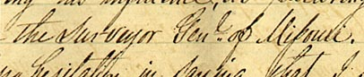
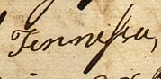
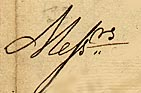
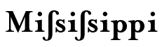
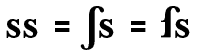
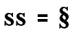
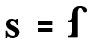
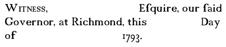
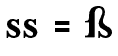

Old Style Handwriting and
Printers’ Ligatures, &c.
The Long S, a.k.a., the Leading S
The handwritten “Long S” has the appearance of a backward “f” and many a new transcriber has mistaken this letter for the “f.” They transcribe names like Ross and Curtiss as Rofs and Curtifs.

Here we see the Long S and the Short S in context, from an 1839 Virginia letter. The line reads, “. . . the Surveyor Genl of Missouri.” This Long S/Short S combination looks like the letter “p” but there is no word, Mipouri.
 “Tennessee,” from an 1801 deed.
 “Messrs” - plural of “Mister.”.
 Two ways to typeset
“Mississippi” with the Long S.

 The double “S” called
“Section” as found on legal records, which indicates a break between
sections.
 A single “S.” The crossbar of this letter is unlike that of the letter “f” - it is incomplete in the Long-S.
 This graphic reconstruction has been taken from a preprinted Commonwealth of Virginia - Militia appointment form. Notice the single Long-S used here; “. . . Esquire, our said Governor, . . .
”
 The German “eszett” (they call
this ligature, “ringel-S”). It is of course, a double
“S.”
| |